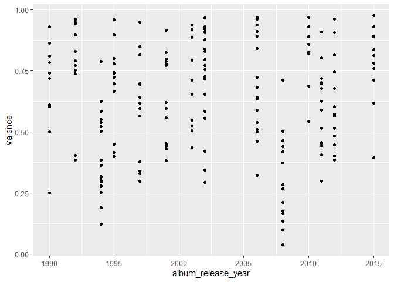
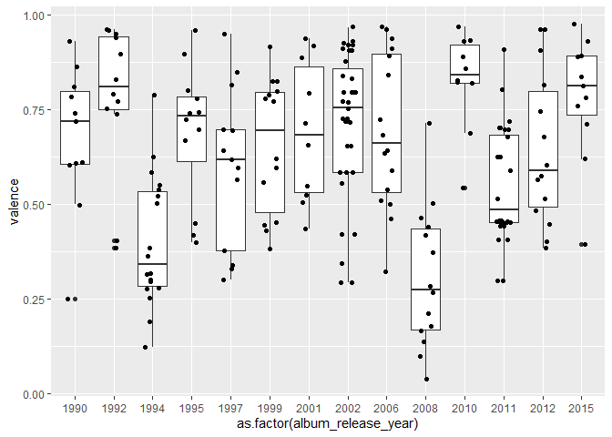
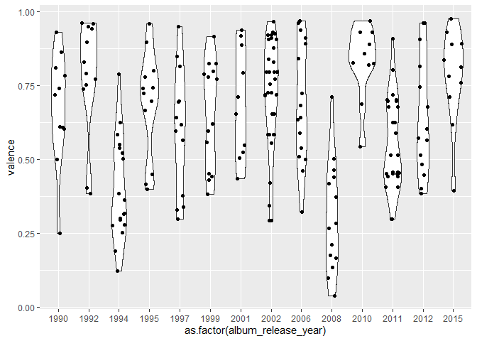
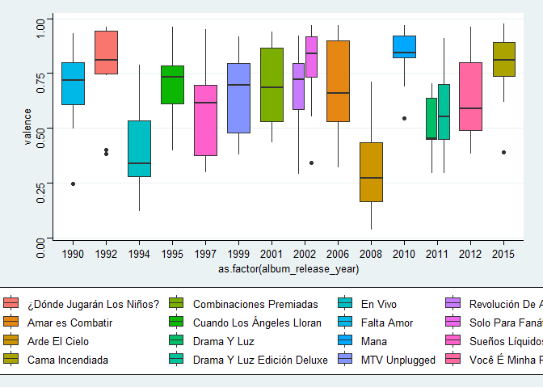
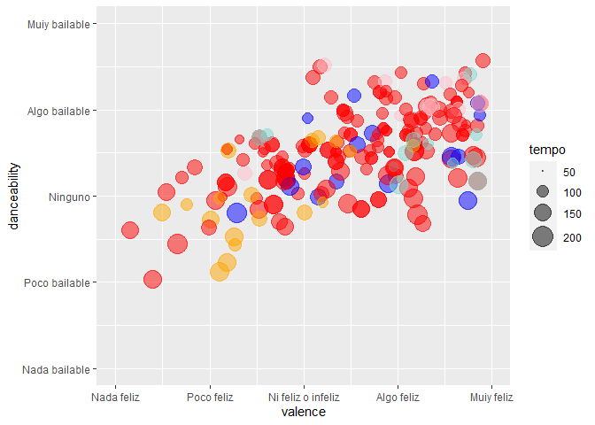
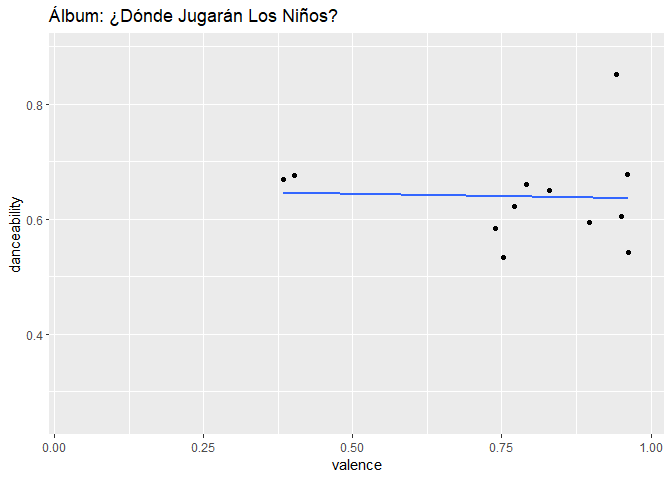
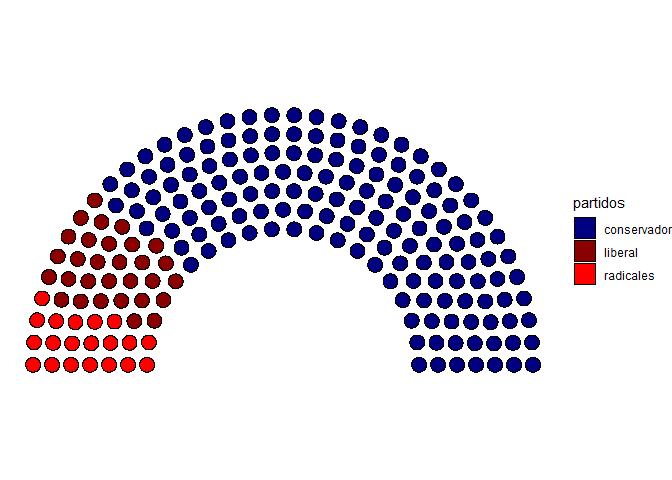
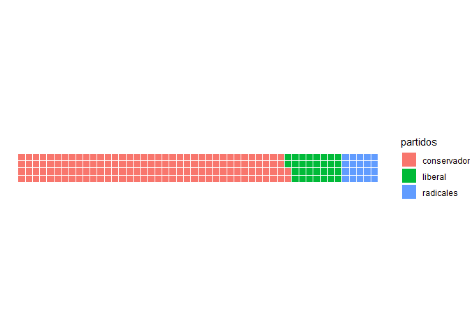

Sesión 1
Visualizaciones avanzadas en R
27 de febrero de 2021
1. Bibliotecas
pacman::p_load(
tidyverse, # Tidyverse y sus funciones
gapminder, # Acceso a la base de datos de gapminder
plotly, # Gráficas interactivas en javascript
leaflet, # Mapas interactivos
cowplot, # Ordenar, etiquetar
ggthemes, # Temas cosméticos
hrbrthemes, # Opción de temas elegantes
gganimate, # Gráficas animadas
ggforce, # Muchas geometrías y etiquetas
ggridges, # Creación de ridges
ggrepel, # Etiquetas que se repelan
ggpol, # graficas de arco
waffle, # Gráficas de wafles
spotifyr # Spotifyr
)Forma adicional de instalar spotifyR
library(devtools)
devtools::install_github('charlie86/spotifyr')
library(spotifyr)2. Datos
Sys.setenv(SPOTIFY_CLIENT_ID = tu_id) #Usar id de spotify
Sys.setenv(SPOTIFY_CLIENT_SECRET = tu_id_secreta)
access_token <- get_spotify_access_token()
mana <- get_artist_audio_features("maná")## Warning: `mutate_()` is deprecated as of dplyr 0.7.0.
## Please use `mutate()` instead.
## See vignette('programming') for more help
## This warning is displayed once every 8 hours.
## Call `lifecycle::last_warnings()` to see where this warning was generated.#mana <- read_csv("input/mana.csv")3. Un breve repaso a ggplot2
glimpse(mana)## Rows: 218
## Columns: 39
## $ artist_name <chr> "Maná", "Maná", "Maná", "Maná", "Maná", "Maná", "M...
## $ artist_id <chr> "7okwEbXzyT2VffBmyQBWLz", "7okwEbXzyT2VffBmyQBWLz"...
## $ album_id <chr> "36lGlwe75fTsr4CLVlfYQa", "36lGlwe75fTsr4CLVlfYQa"...
## $ album_type <chr> "album", "album", "album", "album", "album", "albu...
## $ album_images <list> [<data.frame[3 x 3]>, <data.frame[3 x 3]>, <data....
## $ album_release_date <chr> "2015-04-21", "2015-04-21", "2015-04-21", "2015-04...
## $ album_release_year <dbl> 2015, 2015, 2015, 2015, 2015, 2015, 2015, 2015, 20...
## $ album_release_date_precision <chr> "day", "day", "day", "day", "day", "day", "day", "...
## $ danceability <dbl> 0.738, 0.771, 0.672, 0.625, 0.724, 0.857, 0.892, 0...
## $ energy <dbl> 0.855, 0.747, 0.960, 0.655, 0.861, 0.561, 0.814, 0...
## $ key <int> 4, 4, 5, 0, 4, 9, 11, 2, 8, 9, 2, 7, 4, 2, 9, 7, 2...
## $ loudness <dbl> -4.124, -4.426, -3.922, -7.118, -5.702, -7.288, -5...
## $ mode <int> 0, 0, 1, 1, 0, 1, 0, 0, 0, 1, 0, 1, 1, 1, 1, 1, 1,...
## $ speechiness <dbl> 0.0375, 0.0286, 0.0365, 0.0301, 0.0449, 0.0292, 0....
## $ acousticness <dbl> 0.01650, 0.10900, 0.03900, 0.46100, 0.02890, 0.435...
## $ instrumentalness <dbl> 6.12e-06, 1.31e-06, 4.02e-04, 5.39e-05, 5.67e-03, ...
## $ liveness <dbl> 0.2450, 0.1430, 0.1580, 0.3650, 0.0536, 0.0831, 0....
## $ valence <dbl> 0.711, 0.838, 0.782, 0.393, 0.812, 0.760, 0.976, 0...
## $ tempo <dbl> 101.989, 107.032, 117.040, 87.951, 110.005, 99.989...
## $ track_id <chr> "7H4mYbLFCNqn37q6Yeylly", "33AeuOquHjWCNVEsHFAJzd"...
## $ analysis_url <chr> "https://api.spotify.com/v1/audio-analysis/7H4mYbL...
## $ time_signature <int> 4, 4, 4, 4, 4, 4, 4, 4, 4, 4, 4, 4, 4, 4, 4, 4, 4,...
## $ artists <list> [<data.frame[1 x 6]>, <data.frame[1 x 6]>, <data....
## $ available_markets <list> [<"AD", "AE", "AG", "AL", "AM", "AR", "AT", "AU",...
## $ disc_number <int> 1, 1, 1, 1, 1, 1, 1, 1, 1, 1, 1, 1, 1, 1, 1, 1, 1,...
## $ duration_ms <int> 244586, 276853, 258986, 316520, 225506, 272576, 30...
## $ explicit <lgl> FALSE, FALSE, FALSE, FALSE, FALSE, FALSE, FALSE, F...
## $ track_href <chr> "https://api.spotify.com/v1/tracks/7H4mYbLFCNqn37q...
## $ is_local <lgl> FALSE, FALSE, FALSE, FALSE, FALSE, FALSE, FALSE, F...
## $ track_name <chr> "Adicto A Tu Amor", "La Cama Incendiada", "La Pris...
## $ track_preview_url <chr> "https://p.scdn.co/mp3-preview/cfb70b4b6abf504ff19...
## $ track_number <int> 1, 2, 3, 4, 5, 6, 7, 8, 9, 10, 11, 1, 2, 3, 4, 5, ...
## $ type <chr> "track", "track", "track", "track", "track", "trac...
## $ track_uri <chr> "spotify:track:7H4mYbLFCNqn37q6Yeylly", "spotify:t...
## $ external_urls.spotify <chr> "https://open.spotify.com/track/7H4mYbLFCNqn37q6Ye...
## $ album_name <chr> "Cama Incendiada", "Cama Incendiada", "Cama Incend...
## $ key_name <chr> "E", "E", "F", "C", "E", "A", "B", "D", "G#", "A",...
## $ mode_name <chr> "minor", "minor", "major", "major", "minor", "majo...
## $ key_mode <chr> "E minor", "E minor", "F major", "C major", "E min...ggplot(
data = mana,
aes(
x = album_release_year,
y = valence
)
) + # Los elementos gráficos se unen con un signo de +
geom_point()
ggplot(
data = mana,
aes(
x = as.factor(album_release_year),
y = valence
)
) + # Los elementos gráficos se unen con un signo de +
geom_boxplot() +
geom_jitter(width = 0.2)
ggplot(
data = mana,
aes(
x = as.factor(album_release_year),
y = valence
)
) + # Los elementos gráficos se unen con un signo de +
geom_violin() +
geom_sina()
4. Temas y paletas
caja <- ggplot(
data = mana,
aes(
x = as.factor(album_release_year),
y = valence,
fill = album_name
)
) + # Los elementos gráficos se unen con un signo de +
geom_boxplot()
ggplotly(caja)caja_dark <- ggplot(
data = mana,
aes(
x = as.factor(album_release_year),
y = valence,
fill = album_name
)
) +
geom_boxplot(color="white") +
labs(title ="Las canciones de Maná no se han hecho tristes con el tiempo",
subtitle = "Felicidad de las canciones de Maná por álbum",
x ="",
y = "Felicidad",
caption = "Elaborado por @jmtoralc | Datos de la API de Spotify") +
theme_minimal() +
theme(
plot.title = element_text(hjust = 0.5, size= 20, color="white"),
plot.subtitle = element_text(hjust = 0.5, size= 15, color ="white"),
plot.background = element_rect(fill="black"),
panel.background = element_rect(fill="black"),
panel.grid = element_blank(),
text = element_text(colour="white"),
axis.text = element_text(colour="white")
)
#ggsave("outputs/caja1.svg")
caja_dark
caja +
theme_stata()
Usar una interfaz gráfica.
library(esquisse)
esquisse::esquisser()`
5. Escalas
Propongamos una ecuación:
dance = valencex + u
ggplot(
data = mana,
aes(
x = valence,
y = danceability,
size = tempo
)
) +
geom_point(aes(color=album_name), alpha=0.5) +
#geom_smooth(method = "lm", se=F) +
guides(color = F) +
#geom_mark_rect(aes(color=album_name))
scale_color_manual(values = c("#81d8d0","blue","red","red","red",
"red","red","red","orange","red","red",
"red","red","pink","red", "red")) +
#scale_color_brewer(palette="Blues")
scale_x_continuous(limits=c(0,1),
breaks = c(0,0.25,0.5,0.75, 1),
labels = c("Nada feliz",
"Poco feliz",
"Ni feliz o infeliz",
"Algo feliz",
"Muiy feliz")) +
scale_y_continuous(limits=c(0,1),
breaks = c(0,0.25,0.5,0.75, 1),
labels = c("Nada bailable",
"Poco bailable",
"Ninguno",
"Algo bailable",
"Muiy bailable")) +
scale_size(range = c(0,8),
breaks = c(50, 100, 150, 200),
limits = c(50,200))
6. Animación
#install.packages("transformr")
ggplot(
data = mana,
aes(
x = valence,
y = danceability
)
) +
geom_point() +
geom_smooth(se=F, method = "lm") +
guides(fill=F) +
transition_states(
album_name,
transition_length = 2,
state_length = 3
) +
enter_fade() +
exit_shrink() +
ease_aes("sine-in-out") +
labs(title = "Álbum: {closest_state}")## `geom_smooth()` using formula 'y ~ x'##
Rendering [>---------------------------------------------------------] at 9 fps ~ eta: 11s
Rendering [=>------------------------------------------------------] at 4.2 fps ~ eta: 23s
Rendering [=>--------------------------------------------------------] at 5 fps ~ eta: 19s
Rendering [==>-----------------------------------------------------] at 5.7 fps ~ eta: 17s
Rendering [==>-----------------------------------------------------] at 6.2 fps ~ eta: 15s
Rendering [===>----------------------------------------------------] at 6.4 fps ~ eta: 14s
Rendering [===>----------------------------------------------------] at 6.7 fps ~ eta: 14s
Rendering [====>---------------------------------------------------] at 7.1 fps ~ eta: 13s
Rendering [=====>--------------------------------------------------] at 7.4 fps ~ eta: 12s
Rendering [=====>--------------------------------------------------] at 7.8 fps ~ eta: 11s
Rendering [======>-------------------------------------------------] at 8.1 fps ~ eta: 11s
Rendering [======>-------------------------------------------------] at 8.3 fps ~ eta: 10s
Rendering [=======>------------------------------------------------] at 8.5 fps ~ eta: 10s
Rendering [========>-----------------------------------------------] at 8.7 fps ~ eta: 10s
Rendering [=========>----------------------------------------------] at 8.9 fps ~ eta: 9s
Rendering [=========>------------------------------------------------] at 9 fps ~ eta: 9s
Rendering [==========>---------------------------------------------] at 9.2 fps ~ eta: 9s
Rendering [==========>---------------------------------------------] at 9.3 fps ~ eta: 9s
Rendering [===========>--------------------------------------------] at 9.4 fps ~ eta: 8s
Rendering [===========>--------------------------------------------] at 9.5 fps ~ eta: 8s
Rendering [============>-------------------------------------------] at 9.5 fps ~ eta: 8s
Rendering [============>-------------------------------------------] at 9.6 fps ~ eta: 8s
Rendering [=============>------------------------------------------] at 9.6 fps ~ eta: 8s
Rendering [==============>-----------------------------------------] at 9.7 fps ~ eta: 8s
Rendering [===============>----------------------------------------] at 9.6 fps ~ eta: 7s
Rendering [===============>----------------------------------------] at 9.5 fps ~ eta: 7s
Rendering [================>---------------------------------------] at 9.4 fps ~ eta: 7s
Rendering [================>---------------------------------------] at 9.2 fps ~ eta: 7s
Rendering [=================>--------------------------------------] at 9.1 fps ~ eta: 7s
Rendering [=================>--------------------------------------] at 9.2 fps ~ eta: 7s
Rendering [==================>-------------------------------------] at 9.2 fps ~ eta: 7s
Rendering [===================>------------------------------------] at 9.3 fps ~ eta: 7s
Rendering [===================>------------------------------------] at 9.4 fps ~ eta: 7s
Rendering [====================>-----------------------------------] at 9.4 fps ~ eta: 7s
Rendering [====================>-----------------------------------] at 9.5 fps ~ eta: 7s
Rendering [=====================>----------------------------------] at 9.5 fps ~ eta: 6s
Rendering [======================>-----------------------------------] at 8 fps ~ eta: 8s
Rendering [=======================>----------------------------------] at 8 fps ~ eta: 7s
Rendering [=======================>--------------------------------] at 8.1 fps ~ eta: 7s
Rendering [=========================>--------------------------------] at 8 fps ~ eta: 7s
Rendering [========================>-------------------------------] at 8.1 fps ~ eta: 7s
Rendering [==========================>-------------------------------] at 8 fps ~ eta: 7s
Rendering [=========================>------------------------------] at 7.6 fps ~ eta: 7s
Rendering [==========================>-----------------------------] at 7.6 fps ~ eta: 7s
Rendering [==========================>-----------------------------] at 7.7 fps ~ eta: 7s
Rendering [===========================>----------------------------] at 7.8 fps ~ eta: 6s
Rendering [============================>---------------------------] at 7.8 fps ~ eta: 6s
Rendering [============================>---------------------------] at 7.9 fps ~ eta: 6s
Rendering [==============================>---------------------------] at 8 fps ~ eta: 6s
Rendering [==============================>-------------------------] at 8.1 fps ~ eta: 6s
Rendering [==============================>-------------------------] at 8.1 fps ~ eta: 5s
Rendering [===============================>------------------------] at 8.1 fps ~ eta: 5s
Rendering [===============================>------------------------] at 8.2 fps ~ eta: 5s
Rendering [================================>-----------------------] at 8.2 fps ~ eta: 5s
Rendering [=================================>----------------------] at 8.3 fps ~ eta: 5s
Rendering [==================================>---------------------] at 8.3 fps ~ eta: 5s
Rendering [==================================>---------------------] at 8.3 fps ~ eta: 4s
Rendering [===================================>--------------------] at 8.3 fps ~ eta: 4s
Rendering [====================================>-------------------] at 8.3 fps ~ eta: 4s
Rendering [=====================================>------------------] at 8.3 fps ~ eta: 4s
Rendering [=====================================>------------------] at 8.4 fps ~ eta: 4s
Rendering [======================================>-----------------] at 8.4 fps ~ eta: 4s
Rendering [======================================>-----------------] at 8.3 fps ~ eta: 4s
Rendering [=======================================>----------------] at 8.3 fps ~ eta: 3s
Rendering [========================================>---------------] at 8.3 fps ~ eta: 3s
Rendering [========================================>---------------] at 8.2 fps ~ eta: 3s
Rendering [=========================================>--------------] at 8.3 fps ~ eta: 3s
Rendering [==========================================>-------------] at 8.2 fps ~ eta: 3s
Rendering [==========================================>-------------] at 8.3 fps ~ eta: 3s
Rendering [===========================================>------------] at 8.2 fps ~ eta: 3s
Rendering [============================================>-----------] at 8.2 fps ~ eta: 2s
Rendering [=============================================>----------] at 8.2 fps ~ eta: 2s
Rendering [=============================================>----------] at 8.3 fps ~ eta: 2s
Rendering [==============================================>---------] at 8.3 fps ~ eta: 2s
Rendering [===============================================>--------] at 8.3 fps ~ eta: 2s
Rendering [===============================================>--------] at 8.4 fps ~ eta: 2s
Rendering [================================================>-------] at 8.4 fps ~ eta: 2s
Rendering [================================================>-------] at 8.4 fps ~ eta: 1s
Rendering [=================================================>------] at 8.5 fps ~ eta: 1s
Rendering [==================================================>-----] at 8.5 fps ~ eta: 1s
Rendering [===================================================>----] at 8.6 fps ~ eta: 1s
Rendering [====================================================>---] at 8.6 fps ~ eta: 1s
Rendering [====================================================>---] at 8.7 fps ~ eta: 1s
Rendering [=====================================================>--] at 8.6 fps ~ eta: 0s
Rendering [=====================================================>--] at 8.7 fps ~ eta: 0s
Rendering [======================================================>-] at 8.7 fps ~ eta: 0s
Rendering [========================================================] at 8.7 fps ~ eta: 0s
##
Frame 1 (1%)
Frame 2 (2%)
Frame 3 (3%)
Frame 4 (4%)
Frame 5 (5%)
Frame 6 (6%)
Frame 7 (7%)
Frame 8 (8%)
Frame 9 (9%)
Frame 10 (10%)
Frame 11 (11%)
Frame 12 (12%)
Frame 13 (13%)
Frame 14 (14%)
Frame 15 (15%)
Frame 16 (16%)
Frame 17 (17%)
Frame 18 (18%)
Frame 19 (19%)
Frame 20 (20%)
Frame 21 (21%)
Frame 22 (22%)
Frame 23 (23%)
Frame 24 (24%)
Frame 25 (25%)
Frame 26 (26%)
Frame 27 (27%)
Frame 28 (28%)
Frame 29 (29%)
Frame 30 (30%)
Frame 31 (31%)
Frame 32 (32%)
Frame 33 (33%)
Frame 34 (34%)
Frame 35 (35%)
Frame 36 (36%)
Frame 37 (37%)
Frame 38 (38%)
Frame 39 (39%)
Frame 40 (40%)
Frame 41 (41%)
Frame 42 (42%)
Frame 43 (43%)
Frame 44 (44%)
Frame 45 (45%)
Frame 46 (46%)
Frame 47 (47%)
Frame 48 (48%)
Frame 49 (49%)
Frame 50 (50%)
Frame 51 (51%)
Frame 52 (52%)
Frame 53 (53%)
Frame 54 (54%)
Frame 55 (55%)
Frame 56 (56%)
Frame 57 (57%)
Frame 58 (58%)
Frame 59 (59%)
Frame 60 (60%)
Frame 61 (61%)
Frame 62 (62%)
Frame 63 (63%)
Frame 64 (64%)
Frame 65 (65%)
Frame 66 (66%)
Frame 67 (67%)
Frame 68 (68%)
Frame 69 (69%)
Frame 70 (70%)
Frame 71 (71%)
Frame 72 (72%)
Frame 73 (73%)
Frame 74 (74%)
Frame 75 (75%)
Frame 76 (76%)
Frame 77 (77%)
Frame 78 (78%)
Frame 79 (79%)
Frame 80 (80%)
Frame 81 (81%)
Frame 82 (82%)
Frame 83 (83%)
Frame 84 (84%)
Frame 85 (85%)
Frame 86 (86%)
Frame 87 (87%)
Frame 88 (88%)
Frame 89 (89%)
Frame 90 (90%)
Frame 91 (91%)
Frame 92 (92%)
Frame 93 (93%)
Frame 94 (94%)
Frame 95 (95%)
Frame 96 (96%)
Frame 97 (97%)
Frame 98 (98%)
Frame 99 (99%)
Frame 100 (100%)
## Finalizing encoding... done!
Ejercicio Gapminder
gapminder## # A tibble: 1,704 x 6
## country continent year lifeExp pop gdpPercap
## <fct> <fct> <int> <dbl> <int> <dbl>
## 1 Afghanistan Asia 1952 28.8 8425333 779.
## 2 Afghanistan Asia 1957 30.3 9240934 821.
## 3 Afghanistan Asia 1962 32.0 10267083 853.
## 4 Afghanistan Asia 1967 34.0 11537966 836.
## 5 Afghanistan Asia 1972 36.1 13079460 740.
## 6 Afghanistan Asia 1977 38.4 14880372 786.
## 7 Afghanistan Asia 1982 39.9 12881816 978.
## 8 Afghanistan Asia 1987 40.8 13867957 852.
## 9 Afghanistan Asia 1992 41.7 16317921 649.
## 10 Afghanistan Asia 1997 41.8 22227415 635.
## # ... with 1,694 more rowsggplot(
data = gapminder,
aes(
x = gdpPercap,
y = lifeExp,
color = country,
size= pop
)
) +
geom_point(alpha = 0.7) +
guides(color =F,
size= F) +
scale_color_manual(values = country_colors) +
scale_size(range = c(1, 12)) +
scale_x_log10() +
facet_wrap(~continent) +
labs(title = "Año: {frame_time}") +
transition_time(year) +
ease_aes("linear")##
Rendering [>-------------------------------------------------------] at 3.9 fps ~ eta: 25s
Rendering [>-------------------------------------------------------] at 3.6 fps ~ eta: 27s
Rendering [=>------------------------------------------------------] at 3.6 fps ~ eta: 27s
Rendering [=>------------------------------------------------------] at 3.7 fps ~ eta: 26s
Rendering [==>-----------------------------------------------------] at 3.7 fps ~ eta: 26s
Rendering [==>-----------------------------------------------------] at 3.7 fps ~ eta: 25s
Rendering [===>----------------------------------------------------] at 3.7 fps ~ eta: 25s
Rendering [====>---------------------------------------------------] at 2.7 fps ~ eta: 34s
Rendering [=====>--------------------------------------------------] at 2.8 fps ~ eta: 33s
Rendering [=====>--------------------------------------------------] at 2.8 fps ~ eta: 32s
Rendering [======>-------------------------------------------------] at 2.9 fps ~ eta: 31s
Rendering [======>-------------------------------------------------] at 2.9 fps ~ eta: 30s
Rendering [=======>------------------------------------------------] at 2.9 fps ~ eta: 29s
Rendering [========>-------------------------------------------------] at 3 fps ~ eta: 28s
Rendering [=========>----------------------------------------------] at 3.1 fps ~ eta: 27s
Rendering [=========>----------------------------------------------] at 2.8 fps ~ eta: 29s
Rendering [==========>---------------------------------------------] at 2.8 fps ~ eta: 29s
Rendering [==========>---------------------------------------------] at 2.8 fps ~ eta: 28s
Rendering [===========>--------------------------------------------] at 2.9 fps ~ eta: 27s
Rendering [============>-------------------------------------------] at 2.9 fps ~ eta: 26s
Rendering [=============>--------------------------------------------] at 3 fps ~ eta: 26s
Rendering [=============>--------------------------------------------] at 3 fps ~ eta: 25s
Rendering [==============>-------------------------------------------] at 3 fps ~ eta: 25s
Rendering [===============>------------------------------------------] at 3 fps ~ eta: 24s
Rendering [================>-----------------------------------------] at 3 fps ~ eta: 24s
Rendering [================>-----------------------------------------] at 3 fps ~ eta: 23s
Rendering [=================>----------------------------------------] at 3 fps ~ eta: 23s
Rendering [=================>--------------------------------------] at 2.9 fps ~ eta: 24s
Rendering [=================>--------------------------------------] at 2.9 fps ~ eta: 23s
Rendering [==================>-------------------------------------] at 2.9 fps ~ eta: 23s
Rendering [===================>------------------------------------] at 2.9 fps ~ eta: 22s
Rendering [====================>-------------------------------------] at 3 fps ~ eta: 22s
Rendering [====================>-------------------------------------] at 3 fps ~ eta: 21s
Rendering [=====================>------------------------------------] at 3 fps ~ eta: 21s
Rendering [======================>-----------------------------------] at 3 fps ~ eta: 20s
Rendering [=======================>----------------------------------] at 3 fps ~ eta: 19s
Rendering [=======================>--------------------------------] at 3.1 fps ~ eta: 19s
Rendering [========================>-------------------------------] at 3.1 fps ~ eta: 18s
Rendering [==========================>-------------------------------] at 3 fps ~ eta: 18s
Rendering [===========================>------------------------------] at 3 fps ~ eta: 17s
Rendering [============================>-----------------------------] at 3 fps ~ eta: 17s
Rendering [=============================>----------------------------] at 3 fps ~ eta: 16s
Rendering [==============================>---------------------------] at 3 fps ~ eta: 16s
Rendering [==============================>---------------------------] at 3 fps ~ eta: 15s
Rendering [===============================>--------------------------] at 3 fps ~ eta: 15s
Rendering [===============================>--------------------------] at 3 fps ~ eta: 14s
Rendering [===============================>------------------------] at 3.1 fps ~ eta: 14s
Rendering [================================>-----------------------] at 3.1 fps ~ eta: 13s
Rendering [=================================>----------------------] at 3.1 fps ~ eta: 13s
Rendering [===================================>----------------------] at 3 fps ~ eta: 13s
Rendering [====================================>---------------------] at 3 fps ~ eta: 12s
Rendering [=====================================>--------------------] at 3 fps ~ eta: 12s
Rendering [=====================================>--------------------] at 3 fps ~ eta: 11s
Rendering [======================================>-------------------] at 3 fps ~ eta: 11s
Rendering [=======================================>------------------] at 3 fps ~ eta: 10s
Rendering [========================================>-----------------] at 3 fps ~ eta: 10s
Rendering [=========================================>----------------] at 3 fps ~ eta: 9s
Rendering [==========================================>---------------] at 3 fps ~ eta: 9s
Rendering [===========================================>--------------] at 3 fps ~ eta: 8s
Rendering [============================================>-------------] at 3 fps ~ eta: 8s
Rendering [============================================>-------------] at 3 fps ~ eta: 7s
Rendering [=============================================>------------] at 3 fps ~ eta: 7s
Rendering [==============================================>-----------] at 3 fps ~ eta: 6s
Rendering [===============================================>----------] at 3 fps ~ eta: 6s
Rendering [================================================>---------] at 3 fps ~ eta: 5s
Rendering [=================================================>--------] at 3 fps ~ eta: 5s
Rendering [=================================================>--------] at 3 fps ~ eta: 4s
Rendering [==================================================>-------] at 3 fps ~ eta: 4s
Rendering [=================================================>------] at 3.1 fps ~ eta: 4s
Rendering [=================================================>------] at 3.1 fps ~ eta: 3s
Rendering [====================================================>-----] at 3 fps ~ eta: 3s
Rendering [===================================================>----] at 3.1 fps ~ eta: 2s
Rendering [====================================================>---] at 3.1 fps ~ eta: 2s
Rendering [=====================================================>--] at 3.1 fps ~ eta: 1s
Rendering [========================================================>-] at 3 fps ~ eta: 1s
Rendering [========================================================>-] at 3 fps ~ eta: 0s
Rendering [========================================================] at 3.1 fps ~ eta: 0s
##
Frame 1 (1%)
Frame 2 (2%)
Frame 3 (3%)
Frame 4 (4%)
Frame 5 (5%)
Frame 6 (6%)
Frame 7 (7%)
Frame 8 (8%)
Frame 9 (9%)
Frame 10 (10%)
Frame 11 (11%)
Frame 12 (12%)
Frame 13 (13%)
Frame 14 (14%)
Frame 15 (15%)
Frame 16 (16%)
Frame 17 (17%)
Frame 18 (18%)
Frame 19 (19%)
Frame 20 (20%)
Frame 21 (21%)
Frame 22 (22%)
Frame 23 (23%)
Frame 24 (24%)
Frame 25 (25%)
Frame 26 (26%)
Frame 27 (27%)
Frame 28 (28%)
Frame 29 (29%)
Frame 30 (30%)
Frame 31 (31%)
Frame 32 (32%)
Frame 33 (33%)
Frame 34 (34%)
Frame 35 (35%)
Frame 36 (36%)
Frame 37 (37%)
Frame 38 (38%)
Frame 39 (39%)
Frame 40 (40%)
Frame 41 (41%)
Frame 42 (42%)
Frame 43 (43%)
Frame 44 (44%)
Frame 45 (45%)
Frame 46 (46%)
Frame 47 (47%)
Frame 48 (48%)
Frame 49 (49%)
Frame 50 (50%)
Frame 51 (51%)
Frame 52 (52%)
Frame 53 (53%)
Frame 54 (54%)
Frame 55 (55%)
Frame 56 (56%)
Frame 57 (57%)
Frame 58 (58%)
Frame 59 (59%)
Frame 60 (60%)
Frame 61 (61%)
Frame 62 (62%)
Frame 63 (63%)
Frame 64 (64%)
Frame 65 (65%)
Frame 66 (66%)
Frame 67 (67%)
Frame 68 (68%)
Frame 69 (69%)
Frame 70 (70%)
Frame 71 (71%)
Frame 72 (72%)
Frame 73 (73%)
Frame 74 (74%)
Frame 75 (75%)
Frame 76 (76%)
Frame 77 (77%)
Frame 78 (78%)
Frame 79 (79%)
Frame 80 (80%)
Frame 81 (81%)
Frame 82 (82%)
Frame 83 (83%)
Frame 84 (84%)
Frame 85 (85%)
Frame 86 (86%)
Frame 87 (87%)
Frame 88 (88%)
Frame 89 (89%)
Frame 90 (90%)
Frame 91 (91%)
Frame 92 (92%)
Frame 93 (93%)
Frame 94 (94%)
Frame 95 (95%)
Frame 96 (96%)
Frame 97 (97%)
Frame 98 (98%)
Frame 99 (99%)
Frame 100 (100%)
## Finalizing encoding... done!
Graficar un parlamento
dp <- tibble(
partidos = c("conservador", "liberal", "radicales"),
asientos = c(150, 30, 20),
colores = c("navyblue", "darkred", "red"),
)
ggplot(dp) +
geom_parliament(aes(
seats = asientos,
fill = partidos
)) +
scale_fill_manual(values = dp$colores,
labels = dp$partidos) +
coord_fixed() +
theme_void()
Graficar un waffle
install.packages("waffle", repos = "https://cinc.rud.is")## Error in install.packages : Updating loaded packageslibrary(waffle)
ggplot(dp,
aes(fill= partidos,
values = asientos)) +
geom_waffle(n_rows = 4, size=0.2,
color ="white", flip = F) +
coord_equal() +
theme_void() +
theme_enhance_waffle()